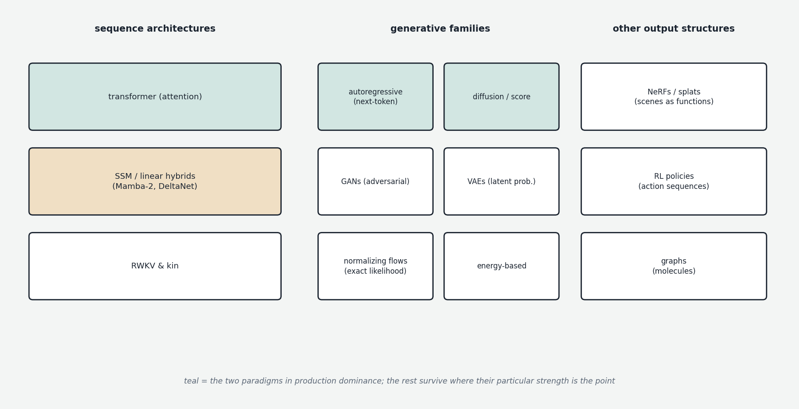

Autoregressive transformers (the core course) and diffusion (Chapter 09a) dominate the headlines, but they are two members of a larger family. This chapter maps the rest: alternative architectures for sequence modeling, alternative mathematical families of generative model, and paradigms for structurally different kinds of output. Several of these feed directly into Chapter 10's frontier; the others are worth knowing so that the current transformer-plus-diffusion consolidation reads as a moment in a wider space, not the whole space.

Alternative sequence architectures: state space models and kin
Same task as the text transformer — predict the next element of a sequence — different machinery. The leading line is state space models (SSMs), best known through Mamba (2023). Inspired by classical control theory, an SSM maintains a small fixed-size hidden state that evolves recurrently through the sequence, with a learned, input-dependent rule for what to remember and forget. The mathematics is arranged so the recurrence can be computed in parallel during training (via an efficient scan) while inference needs only the constant-size state update per token — linear cost in sequence length, versus attention's quadratic, and no KV cache at all (contrast Chapter 00g). The historical weakness is exact recall: a fixed-size state is a lossy summary, and pure SSMs underperform transformers at retrieving specific details from long contexts. The resolution — hybrid stacks interleaving a minority of attention layers among SSM or linear-attention layers — was a research curiosity when first explored (Jamba, Zamba) and is now production reality (Nemotron 3, Qwen's recent generations, and the rest of the roster covered in Chapter 10, which treats this as the live frontier it has become). Related lineages worth recognizing by name: linear attention variants (approximating softmax attention at linear cost — the Gated DeltaNet family is the current state of the art), RWKV (trainable in parallel like a transformer, runnable as a constant-cost recurrent network), and the broader observation that these are, mathematically, neural-network-parameterized descendants of the classical state-space/Kalman tradition that Chapter 09c meets again in econometrics.
Alternative generative families
Four mathematically distinct ways to build a generative model, each with a different answer to "what is learned, and how do you sample."
GANs (Generative Adversarial Networks, 2014) ruled image generation before diffusion. Two networks train in an arms race: a generator maps random noise to images; a discriminator classifies images as real or generated; each improves by beating the other. GANs produce sharp images and — unlike diffusion's 20–50 steps — generate in a single forward pass, but the adversarial dynamic is unstable, mode collapse (the generator finding a few discriminator-fooling patterns and abandoning diversity) is chronic, and there is no principled likelihood. Displaced by diffusion for general generation; still competitive for faces (StyleGAN), real-time use, and image-to-image translation.
VAEs (Variational Autoencoders) appeared in Chapter 09a as latent-diffusion's compressor, but are a complete generative family: an encoder maps data to a distribution in latent space (the "variational" part), a decoder maps latent samples back, and training maximizes a well-defined likelihood bound (the ELBO) while regularizing the latent space toward a simple prior. Clean math, stable training, structured and interpolable latents — and characteristically blurry samples, which kept pure VAEs from winning generation outright while making them indispensable infrastructure (latent diffusion, neural audio codecs, molecule design).
Normalizing flows build networks that are exactly invertible with tractable volume-change accounting, which buys the rare property of exact likelihoods — no bounds, no approximation — and generation by running noise backward through the inverse. The invertibility constraint limits architectural freedom and they never matched GANs or diffusion on images, but they persist in scientific applications (physics, cosmology, molecular modeling) where exact likelihoods are the point. Notably, the flow matching reformulation now used inside top diffusion systems (Chapter 09a) is this family's idea reborn inside the other paradigm.
Energy-based models are the conceptually purest: learn a single scalar energy function — low for plausible data, high for implausible — and sample by iteratively walking samples downhill (Markov chain Monte Carlo). Sampling cost and unreliability kept EBMs from practical victory, but the family matters because diffusion is, mathematically, its disguised success: score-based generative modeling — learning the gradient of log-probability and following it — is the bridge, and is why "diffusion" and "score-based" are used near-interchangeably.
Structurally different outputs
Some generation targets don't fit "a sequence or grid of tokens" at all. Neural radiance fields (NeRFs, 2020) represent a 3D scene as a neural network: query it with a 3D coordinate and viewing direction, get back color and density; render by integrating queries along camera rays. The model is the scene — a learned continuous function rather than a produced artifact — and the idea revolutionized 3D reconstruction from photos; its faster successor, Gaussian splatting (2023), represents scenes as clouds of fuzzy 3D Gaussians on similar principles, and the generative versions (text-to-3D) build on both. Reinforcement learning policies generate action sequences — game moves, robot motions, agent decisions — trained by reward from environment interaction rather than data likelihood (the machinery Chapters 3–4 adapted for language). The closest contact with generative modeling proper is world models: learned predictive simulators of an environment that a policy plans against — a thread that returns at the frontier as video-world-model research. Graph neural networks operate on graph-structured data, with generative variants central to drug discovery — generating candidate molecules with desired properties being among the most consequential applied uses of generative modeling outside media.
The picture to keep
The current moment's consolidation — transformers for sequences, diffusion for perception-like media — sits inside a genuinely wider space: SSM/linear hybrids contesting the sequence architecture (and winning a growing share of production models); GANs, VAEs, flows, and energy-based models as distinct generative mathematics, each surviving where its particular strengths (speed, latents, exact likelihoods, theoretical clarity) are the point; and function-valued, action-valued, and graph-valued generation as reminders that "generate" doesn't have to mean "emit tokens." The recurring pattern across all of it: pick a representation that turns your modality into vectors, then apply one of a small number of generative principles — and the representations and principles recombine far more freely than the product categories suggest.